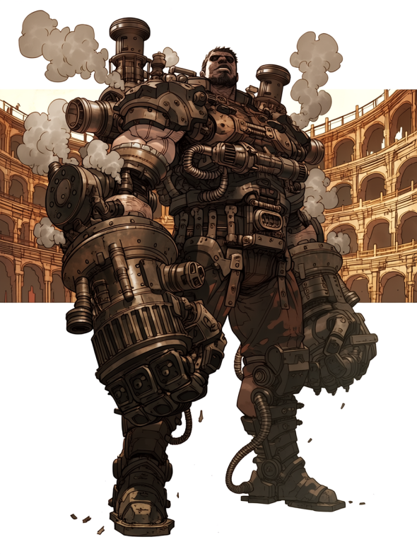
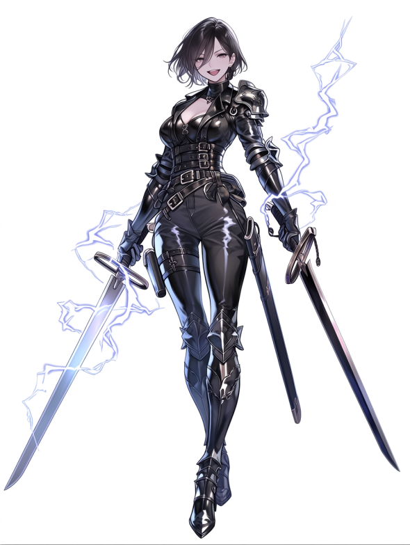
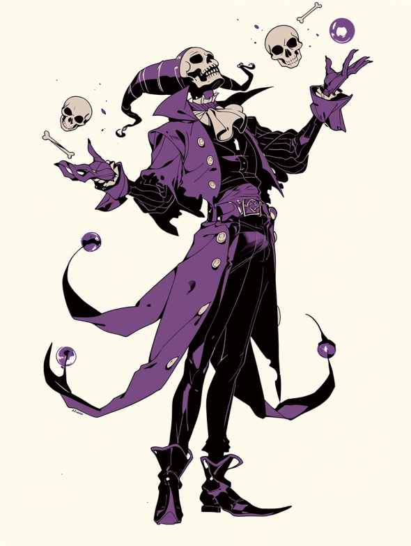
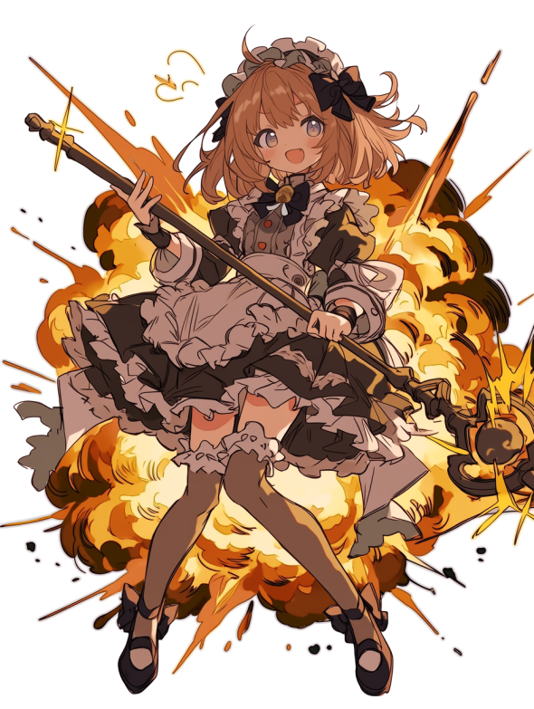

こんにちは！ 編集部のミカです！
王都の夜といえば「闘技場（コロシアム）」！
「野蛮で怖い…」なんて食わず嫌いはもったいない！
今は実力だけじゃなく、強烈なキャラクターを持った選手たちが大人気なんです。
今回は、編集部が厳選した「推せる」4選手を紹介しちゃうよ！

全身を無骨な「試作型・強化外骨格」で覆った大男。蒸気を噴き上げながら、巨大な機械の腕で魔物をミンチにする姿は圧巻！ 「中身は脳だけのサイボーグ」なんて噂もあるけど、そのロマン溢れる戦い方に男の子（と一部のマニア）はメロメロ！ 必殺の『スチーム・パイルバンカー』が決まった瞬間の歓声は、ドーム・シティ一番の熱気かも！？

スタイリッシュな黒のレザーアーマーに身を包んだ、強気なさ美女剣士。目にも止まらぬ双剣と雷魔法で、相手をなぶり殺しにする「処刑ショー」が大人気！ 彼女が勝つと観客席に投げキッス＆敗者をヒールで踏みつけるのがお約束。実は没落した元・貴族令嬢で、借金返済のために戦っているという「悲劇のヒロイン」設定も、ファンの庇護欲をそそるとか…？

骸骨マスクを被った不気味な魔術師。自分の骨を切り離して操ったり、倒した魔物をその場で蘇生させたりと、戦い方はグロテスクそのもの。でも、戦いながらジャグリングをしたり、観客を煽ったりするパフォーマンスは超一流！ 悪役（ヒール）として完璧な振る舞いに、いつの間にか彼を応援したくなっちゃう不思議な魅力があります。※お昼の部は出入り禁止です（笑）

フリフリのロリータ服を着た可憐な少女…に見えるけど、中身は爆炎魔法のスペシャリスト！ 「えいっ♡」と杖を振るたびに、闘技場が爆炎に包まれます。勝利インタビューでの「お父様に怒られちゃう♡」というブリっ子発言と、直前のえげつない爆殺シーンの温度差が最高！ 最前列で観戦するときは、焦げないように「耐熱シート」の準備を忘れずにね！